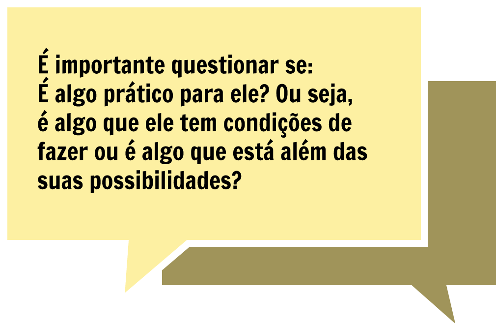

Currículo e práticas pedagógicas inclusivas
O diálogo sobre currículo parece nos impor a necessidade de situar teoricamente o tema, cuja área de conhecimento vem crescendo espantosamente nas últimas décadas. Diferentes teorias se propõem investigar, teorizar e colocar em pratica um currículo, ora privilegiando o trabalho, ora ressaltando a cultura e ora centralizando-se no sujeito que aprende. Neste texto, nosso intuito é apresentar como têm figurado na literatura científica alguns dos estudos sobre o tema e de que forma ele tem perpassado a Educação Especial. Destacaremos também as discussões atuais sobre a proposição de um currículo inclusiva para pessoas com deficiência na EPT.
Índice
- 1 A história curricular na Educação Especial: os médicos-pedagogos
- 2 Os médicos-pedagogos Séguin e Montessori
- 3 Adaptação e/ou adequação curricular: diretrizes nacionais para a educação especial
- 4 Tipos de adaptações
- 5 Práticas Pedagógicas Inclusivas: como desenvolvê-las
- 6 Práticas pedagógicas inclusivas: funcionalidade
- 7 Práticas pedagógicas inclusivas: praticidade
- 8 Práticas pedagógicas inclusivas: Colaboração
- 9 Práticas pedagógicas inclusivas: projetos/estratégias de inclusão
- 10 Considerações
- 11 Alguns apontamentos
- 12 Referências
- 13 Ficha Técnica
1 A história curricular na Educação Especial: os médicos-pedagogos
![]()
Para abordar o currículo na e da Educação Especial, precisamos identificar e compreender as rupturas acerca da deficiência como desencadeadoras de algumas propostas de acompanhamento educacional para pessoas com desenvolvimento fora do padrão, dando início à educação especial. Isto nos permite dizer das primeiras propostas curriculares para a escolarização de pessoas com deficiência.
Não
podemos esquecer que a educação especial se constituiu originalmente a
partir de um modelo médico ou clínico. Ainda que bastante criticada
hoje, acreditamos ser necessário resgatar que os médicos foram os
primeiros a lançar um olhar para a escolarização de indivíduos com
deficiência que se encontravam segregados em hospitais psiquiátricos,
sem diferenciação de idade ou patologia, sobretudo no caso de
deficientes intelectuais. Embora com um olhar clínico e
terapêutico, uma vez a deficiência figurava como uma doença crônica, os
médicos sabiam da urgência de um atendimento educacional para esses
sujeitos, mesmo que com viés da área médica.
A literatura
científica na área aponta que as instituições especializadas na época
tinham seu trabalho organizado com base em um conjunto de terapias
individuais coordenadas pela medicina, fisioterapia, psicologia e
fonoaudiologia. Pouca relevância era dada à atividade acadêmica, haja
vista que essa ocupava pouco tempo do horário dos alunos. Os
pioneiros nessas propostas são apontados pela literatura como os
médicos-educadores Jean Itard (1774-1838), Edouard Séguin (1812-1880) e
Maria Montessori (1870-1952), os precursores da educação de pessoas com
deficiências ou pacientes psiquiátricos, tendo eles empreendidos modelos
de currículos para essa educação.
Tezzari (2010), em sua tese de doutorado, contempla com dados, fatos e informações sobre essa época, os principais representantes e as práticas que naquele momento tentavam escolarizar as pessoas com deficiência. Para a autora, eles, os médicos-educadores, foram os primeiros a propor ações que questionavam o sentido das aprendizagens, a relação com o saber e a legislação acerca das crianças, jovens e adultos com deficiência e/ou doença mental. Eles apostaram nas possibilidades de desenvolvimento de todas as crianças e rejeitavam propostas educativas que não provocassem e instigassem os sujeitos. Também foram eles os primeiros que problematizaram noções de sucesso-fracasso e percepções quantitativas acerca da aprendizagem, assim como lutaram contra práticas discriminatórias e excludentes dos indivíduos mais vulneráveis.
O primeiro a ser destacado e o pioneiro na proposição de currículo para pessoas com problemas de desenvolvimento e aprendizagem é o médico francês Jean Itard. Contestando a visão estática e irreversível com a qual os médicos na época impunham a idiotia, Itard enfrentou o desafio de elaborar experiências educativas para Vitor, o “menino de Aveyron”. Sua trajetória teve início em 1800, quando foi convidado para trabalhar como médico-chefe no Instituto Nacional de Surdos-Mudos. Itard ficou conhecido na época por sua atuação no Instituto, mas foi também reconhecido como o primeiro pedagogo da deficiência mental, uma vez que ao acompanhar Vitor, desenvolveu uma proposta de intervenção pedagógica.

Fonte: Equipe DocentEPT
Itard se interessou pelo caso e começou por questionar o relatório de Pinel que se baseou somente nas falhas e naquilo que Vitor não conseguia fazer. Ao examinar o garoto, o médico concluiu que seu estado decorria do afastamento do convívio social e assim propôs educá-lo e levá-lo ao convívio social. Para ele, a idiotia a que se referiam outros médicos não era resultado de uma deficiência biológica, mas sim de uma insuficiência cultural (Tezzari, 2010). Ao finalizar seu relatório referente às práticas desenvolvidas com Vitor, Itard reconhece os limites das técnicas propostas por ele para educar Vitor, sobretudo em relação ao desenvolvimento da fala. Reduz seus cinco objetivos iniciais para três que consistem em inseri-lo na sociedade, despertar sua sensibilidade nervosa e ampliar suas necessidades cognitivas e de relação com as pessoas a sua volta.

Fonte: Equipe DocentEPT
A leitura de toda a intervenção de Itard junto a Vitor retrata um trabalho pedagógico, e não somente terapêutico-clínico. Sua crença em suas teorias sobre o homem e o seu desenvolvimento o fez seguir fiel e rigidamente as técnicas que ele achou importantes para a educação de Vitor. Mesmo com todo o pessimismo de Itard sobre o progresso de Vitor, a literatura em Educação Especial reconhece hoje que o “médico-pedagogo” deu início a um currículo e a uma educação das pessoas com deficiência.
2 Os médicos-pedagogos Séguin e Montessori
Outro “médico-pedagogo” que a literatura reconhece como pioneiro na educação de pessoas com deficiência é Edouard Séguin. Esse médico também francês foi o primeiro a relatar e descrever as características de pessoas com Síndrome de Down. Também se tornou o pioneiro na educação de deficientes mentais. Em sua época, ele criticava os médicos que escreviam sobre a idiotia, sem ao menos trabalharem diretamente com tais sujeitos. Dizia que a parte prática do estudo com pessoas deficientes era o principal para se investigar e lançar hipóteses sobre o desenvolvimento e a aprendizagem de tais sujeitos.
Por volta de 1840, Séguin funda em Paris a primeira escola para a educação integral de crianças “atrasadas”. Para trabalhar durante as seis horas de permanência das crianças na escola, Séguin projetou e fabricou uma variedade de jogos. Para ele, o jogo permitia ao aluno construir suas ideias e noções trabalhando individual ou coletivamente. Além de sua escola, Séguin também trabalhou com crianças idiotas em asilos e hospícios da época. Propõe uma pedagogia diferenciada a qual devesse considerar a pessoa integralmente, em aspectos físicos, psicológicos, interesses, sentimentos, atividade física e experiência, além da importância do contexto em que o indivíduo está inserido (experiências e vivências). Atribuía ao professor o papel de investigador do aluno, do grupo e do contexto, numa atitude de reflexão sobre a prática pedagógica para a continuidade da intervenção junto aos alunos.
Outro pioneiro em uma proposta educacional para pessoas com deficiência foi Maria Montessori. De origem italiana, essa médica concretizou muita das propostas idealizadas por Itard e Séguin para a educação dos deficientes. Seu trabalho com crianças retardadas ou mentalmente deficientes (Tezzari, 2010) tem início quando ela vai atender em Clínicas Psiquiátricas. E daí ela se aproxima da educação e do trabalho de Séguin. Segundo ela, a obra de Séguin indicava um meio para se educar a criança deficiente mental: o amor. E destaca que a deficiência não é um problema apenas médico, mas pedagógico.
Mendes (1995) relata que Montessori, após estudar as obras de Itard e Séguin, formulou a ideia de que o problema da pessoa com deficiência era pedagógico, e não médico. Ela, então, se dedica a criar um método que permitisse ensinar habilidades de leitura e escrita e a educar crianças pequenas através do autoensino. Objetivava desenvolver comportamentos mais espontâneos pelas crianças através de ambientes que favorecessem a liberdade de ação para garantir a motivação do aluno e o autoensino.
A partir desse pioneirismo em relação à educação de pessoas com deficiência, foram sendo ampliados e propagados os modelos curriculares para a educação especial. Esses modelos acompanharam a trajetória legal e científica acerca dessa modalidade de ensino e dos sujeitos a quem se destinava. De modelos médicos ou clínicos; remediativos ou compensatórios como abordados anteriormente; modelos mais desenvolvimentistas e comportamentais, que se instalam a partir de um olhar mais psicológico e determinista, a um modelo sociológico e sistêmico, cujo enfoque recaiu sobre a ideia de que a deficiência é um fenômeno socialmente construído e precisa ser investigada em diferentes sistemas, sob diferentes perspectivas.
![Contudo, na proposta de educação regular inclusiva, repensar o currículo para que atenda ao aluno com deficiência, TGD e altas habilidades/superdotação, não é retomar conteúdos e práticas de assistencialismo e cuidado anteriormente praticadas para a educação das pessoas com deficiência em escolas especiais, mas sim repensar os conhecimentos, conteúdos, práticas e metodologias que possibilitaram ao aluno com deficiência se apropriar do conhecimento referente ao nível de ensino em que está matriculado e, a partir desse conhecimento, transformar em sujeito escolarizado, com formação científica e humana que promovam sua participação efetiva na sociedade.](arquivos/Figura%2003%20com%20texto.png)
Leia o texto de Maria Cristina Caminha de Castilhos França; Clarice Monteiro Escott, "Adaptação Curricular: um processo em construção para uma inclusão efetiva", disponível em Reflexões sobre o Currículo Inclusivo, de 2018.

Outra sugestão é o artigo Educação Inclusiva na Educação Profissional e Tecnológica: Vislumbrando Desafios Possíveis. Neste texto, Rejane Gomes Ferreira, do Instituto Federal de Educação, Ciência e Tecnologia do Rio Grande do Norte, Campus Currais Novos; e Isandra de França socializam experiências vivenciadas na implantação do Núcleo de Apoio às Pessoas com Necessidades Educacionais Específicas (NAPNE) no Instituto.
3 Adaptação e/ou adequação curricular: diretrizes nacionais para a educação especial
O conceito de adaptações curriculares remete a estratégias e critérios de atuação docente, admitindo decisões que oportunizam adequar a ação educativa escolar às maneiras peculiares de aprendizagem dos alunos, considerando que o processo de ensino-aprendizagem pressupõe atender à diversificação de necessidades dos alunos na escola (MEC/SEESP/SEB, 1998).
As adaptações curriculares propostas pelo MEC/SEF/SEESP (1998) para a educação especial visam promover o desenvolvimento e a aprendizagem dos alunos que apresentam necessidades educacionais especiais (termo utilizado na época), tendo como referência a elaboração do projeto pedagógico e a implementação de práticas inclusivas no sistema escolar. Pressupõe que se realize a adaptação do currículo regular, quando necessário, para torná-lo apropriado às peculiaridades dos alunos público-alvo da educação especial. Não um novo currículo, mas um currículo dinâmico, alterável, passível de ampliação, para que atenda realmente a todos os educandos. As alterações e adequações baseiam-se nos seguintes aspectos:
- atitude favorável da escola para diversificar e flexibilizar o processo de ensino-aprendizagem, de modo a atender às diferenças individuais dos alunos;
- identificação das especificidades dos alunos para justificar a priorização de recursos e meios favoráveis à sua educação;
- adoção de currículos abertos e propostas curriculares diversificadas, em lugar de uma concepção uniforme e homogeneizadora de currículos;
- flexibilidade quanto à organização e ao funcionamento da escola para atender à demanda diversificada dos alunos;
- possibilidade de incluir professores especializados, serviços de apoio e outros não convencionais, para favorecer o processo educacional.
De acordo com tais diretrizes, os critérios de adaptação curricular são indicadores do que os alunos devem aprender, de como e quando aprender, das distintas formas de organização do ensino e de avaliação da aprendizagem com ênfase na necessidade de previsão e provisão de recursos e apoio adequados, para que TODOS aprendam. Consideram-se apoio os diversos
"recursos e estratégias que promovem o interesse e as capacidades das pessoas, bem como oportunidades de acesso a bens e serviços, informações e relações no ambiente em que vivem. Tende a favorecer a autonomia, a produtividade, a integração e a funcionalidade no ambiente escolar e comunitário".
O apoio é caracterizado em termos de intensidade, sendo classificado em:
- Intermitente: quando se dá em momentos de crises e em situações específicas de aprendizagem;
- Limitado: reforço pedagógico para algum conteúdo durante um semestre, desenvolvimento de um programa de psicomotricidade;
- Extensivo: sala de recursos ou de apoio pedagógico, atendimento itinerante, isto é, modalidades de atendimento complementar ao da classe regular realizado por professores especializados;
- Pervasivo: alta intensidade, longa duração ou ao longo da vida para alunos com deficiências múltiplas ou agravantes. Envolve equipes e muitos ambientes de atendimento.
Os parâmetros curriculares propõem uma diferenciação entre adaptações e acesso ao currículo, cujas proposições se apresentam de forma confusa e reiterativa. Podemos inferir que as adaptações curriculares são concernentes às alterações de conteúdo, estratégias ou de metodologia e que o acesso ao currículo refere-se a recursos tais como adaptações do espaço físico, materiais, mobiliário, equipamentos e sistemas de comunicação alternativos.
4 Tipos de adaptações
Apresentamos, então, os tipos de adaptações propostas:
- Organizativas - englobam agrupamento de alunos, organização didática da aula (conteúdos e objetivos de interesse do aluno ou diversificados), disposição do mobiliário, de materiais didáticos e tempos flexíveis;
- Objetivos e conteúdos - definem prioridade de áreas e conteúdos de acordo com critérios de funcionalidade; ênfase nas capacidades, habilidades básicas de atenção, participação e adaptabilidade dos alunos; sequência gradativa de conteúdos, do mais simples para o mais complexo; previsão de reforço de aprendizagem como apoio complementar; conteúdos básicos e essenciais em detrimento de conteúdos secundários e menos relevantes;
- Avaliativas - consistem na seleção de técnicas e instrumentos de acordo com a identificação das necessidades educacionais especiais dos alunos.
Os procedimentos didáticos e Atividades de ensino-aprendizagem remetem à alteração e seleção de métodos, às atividades complementares, prévias e alternativas, aos recursos de apoio, à alteração dos níveis de complexidade da tarefa, à seleção e adaptação de material, Tempos flexíveis no que se refere à duração e ao período das atividades propostas. A ênfase em parcerias com instituições especializadas e a manutenção de estruturas e serviços de apoio paralelos representam um esforço de conciliação entre modelos conceituais conflitantes. O que parece ser evitado é o desmantelamento de tais estruturas e o confronto de posições antagônicas que acirram a polêmica acerca da escola inclusiva.
Não podemos esquecer que a operacionalização da escola inclusiva é focalizada em termos da transferência de recursos e de serviços de apoio especializados para o ensino regular. Neste sentido, a educação especial é concebida como modalidade de educação escolar complementar e necessária para que alunos com necessidades educacionais especiais alcancem os fins da educação geral. Este é o viés que permeia as proposições contidas no documento lançado pelo MEC, para orientar a ação pedagógica dos educadores quanto às adaptações curriculares que visam à inserção, no sistema escolar, de alunos com deficiências física, sensorial, mental, altas habilidades, condutas típicas e outras peculiaridades.
Tal viés é justificado na afirmação de que "A análise de diversas pesquisas brasileiras identifica tendências que evitam considerar a educação especial como um subsistema à parte e reforçam o seu caráter interativo na educação geral. Sua ação transversal permeia todos os níveis - educação infantil, ensino fundamental, ensino médio e educação superior, bem como as demais modalidades- educação de jovens e adultos e educação profissional" (Parâmetros Curriculares Nacionais: Adaptações Curriculares MEC/SEF/SEESP 1998: 21).
Em contraposição, outras correntes teóricas sustentam que "O que define o especial da educação não é a dicotomização e a fragmentação dos sistemas escolares em modalidades diferentes, mas a capacidade de a escola atender às diferenças nas salas de aula, sem discriminar, sem trabalhar à parte com alguns, sem estabelecer regras específicas para se planejar, para aprender, para avaliar (currículos, atividades, avaliação da aprendizagem especiais). (...) Em outras palavras, este especial qualifica as escolas que são capazes de incluir os alunos excluídos, indistintamente, descentrando os problemas relativos à inserção total dos alunos com deficiência e focando o que realmente produz essa situação lamentável de nossas escolas" (Mantoan).
![Consideremos a complexidade do tema cujo antagonismo de análises e tendências anima um efervescente embate teórico e político acerca da educação especial e inclusiva. Esse é um embate que interessa sobretudo aos educadores que não deveriam se omitir, pois são os interlocutores privilegiados e protagonistas da ação pedagógica. Esperamos que exercitem o questionamento e a crítica, numa atitude pro ativa e que sejam capazes de identificar concepções subjacentes ao texto e o contexto de possíveis paradoxos, contradições e paradigmas fundantes das políticas educacionais.](arquivos/Figura%2004%20com%20texto.png)
Fonte: Equipe DocentEPT
Para finalizarmos a compreensão deste tema, assista à videoaula da profa. Larissy Cotonhoto Adequações curriculares.
------------------------------------------------------
Texto produzido por Elizabet Dias de Sá (Disponível em http://www.bancodeescola.com/verbete5.htm)
5 Práticas Pedagógicas Inclusivas: como desenvolvê-las
Abordaremos, neste capítulo, os conceitos relevantes para a elaboração de práticas pedagógicas inclusivas.
Primeiramente, destacamos que um dos pontos importantes para elaborarmos práticas pedagógicas inclusivas é entender sobre o desenvolvimento individual. Isso quer dizer que a proposta curricular é individualizada, que eu não posso pensar em um currículo a partir da turma e pedir que o aluno se adapte a esse currículo. Eu tenho que pensar em algo que, mesmo partindo do currículo geral da turma, seja específico para aquele aluno.
Assim sendo, toda proposta curricular e pedagógica que eu fizer na educação especial, para atender às demandas da inclusão, tem que contemplar a individualidade do aluno. Cada aluno tem sua identidade, cada aluno tem seu jeito de aprender. E não se trata somente das atividades específicas para aquele aluno, dentro da realidade do que ele pode fazer, mas também das atividades apropriadas para ele.
Por exemplo, se eu estou no primeiro ano, quando a produção da escrita é muito importante, quando a escola prioriza a leitura e a escrita, é preciso também que eu pense o que eu posso elaborar em termos de atividades para ajudar o movimento da escrita daquele aluno. Geralmente, os alunos que têm algum tipo de deficiência intelectual também trazem algum tipo de dificuldade motora. Então, é preciso que eu pense em uma estratégia que seja ligada não somente às atividades da escola, da classe, mas que seja também específica para aquele aluno.
6 Práticas pedagógicas inclusivas: funcionalidade
Outro ponto importante que merece destaque ao elaborarmos práticas pedagógicas que sejam inclusivas é a funcionalidade.
Devemos nos perguntar:

Funcionalidade é aquilo que vai ser utilizado na sua vida social, aquilo que vai ser importante para a aquisição da cidadania, para o exercício dos seus direitos. Por exemplo, quando eu penso na funcionalidade de um exercício da pega de pinça, da pega do lápis: isso é funcional, porque ele vai fazer esse movimento constantemente na sua vida social; ele vai fazer esse movimento não somente na hora da escola, mas também quando ele for ao restaurante, quando ele for manipular os utensílios durante uma refeição. Há também a questão da higiene pessoal, do autocuidado, de aprender a lidar com as demandas do cotidiano.
Uma proposta curricular e pedagógica que contempla esses aspectos é funcional, porque pode ser utilizado fora da escola. Porque a aprendizagem que proporciona na sala de aula, no espaço escolar, repercute também fora da sala.
Precisamos entender que a escola não é o fim do movimento do aluno, não é o fim das coisas. A escola é um meio para se adquirir as habilidades, para se adquirir as potencialidades, para se poder exercer uma vida cidadã, uma vida incluída no mundo social.
Então, a escola não é um fim, mas um meio para que o aluno desenvolva, com qualidade, a sua vida social, a sua vida familiar, a sua vida afetiva e assim por diante.
7 Práticas pedagógicas inclusivas: praticidade
Praticidade também é um ponto que merece ser destacado ao planejarmos práticas pedagógicas inclusivas.
Devemos perguntar se o aluno vai poder realizar aquilo que será desenvolvido com ele naquele momento.

É por isso que a proposta e a prática pedagógica têm que ser pensadas a partir de cada sujeito, cada indivíduo, por conta das suas condições para realizar as atividades. Isso demanda uma variedade de estratégias e metodologias.
Por exemplo, quando em uma sala de aula existe um aluno que faz uso de cadeira de rodas, é preciso que o layout, a disposição do mobiliário seja adequada para o movimento do cadeirante; quer dizer, é preciso que seja prático, que o seu movimento, a sua circulação em sala seja possível, assim como as atividades e experiências propostas devam prever alterações no ambiente físico para que ele possa interagir na atividade.
A praticidade não é somente o material, a atividade em si; é também todo o contexto social da escola, todo o contexto dos atores que estão em torno do aluno: o professor, os colegas, a coordenação.
8 Práticas pedagógicas inclusivas: Colaboração
E, por último, mas não menos importante, devemos pensar de que forma essa experiência pedagógica irá colaborar com a aprendizagem e desenvolvimento do aluno, dentro e fora da escola. Colaboração é uma palavra que deve ser pensada e discutida no planejamento.
Precisamos debater sobre como as atividades podem e devem colaborar para que esses alunos possam saber lidar com as demandas da vida diária. A vida diária, para um aluno com deficiência, às vezes, é muito hostil, muito desafiadora.
Uma reflexão importante é: o que se ensina na escola é desafiador? Os materiais e as atividades propostos são desafiadores? Permitem que o aluno se prepare para o mundo social, cultural, político, do trabalho?

As respostas mostram que elas podem me servir para a vida social. Quando elas têm esse propósito, quando elas me colocam em condições de poder vivenciar essas habilidades fora da sala de aula, as estratégias adotadas são, realmente, funcionais e colaborativas.
9 Práticas pedagógicas inclusivas: projetos/estratégias de inclusão
O processo de ensino-aprendizagem, a dinâmica, o diálogo do professor com o aluno, do ensino com a aprendizagem, têm que ser sistemáticos e têm que estar de acordo com a idade do aluno. Aí entramos em outro aspecto que é importante: projetos/estratégias de inclusão.
A escola tem que planejar e criar estratégias de inclusão, desde o ingresso do aluno com deficiência, sua inclusão nas turmas e modalidades de ensino, até nas ações escolares coletivas, para que esse processo de inclusão aconteça na escola como um todo.
A aprendizagem do aluno com deficiência, em sala de aula em disciplinas teóricas, e também fora da sala de aula, em disciplinas práticas, laborais ou profissionais, deve ser o centro do planejamento do professor da disciplina, do professor de educação especial, do pedagogo e dos profissionais de educação que dão apoio à inclusão do aluno. Projetos de inclusão, bem como práticas pedagógicas inclusivas cotidianas só se efetivam e beneficiam o aluno se forem pensadas, planejadas e tecidas por uma equipe que, com seus conhecimentos, experiências e metodologias, colaborativamente, traça uma trajetória de aprendizagem justa e exequível para o aluno público-alvo da educação especial.
Neste material, você conhecerá o Trabalho Colaborativo como trabalho em conjunto do professor da classe comum e do professor da educação especial. Verá também algumas reflexões a respeito de ações dentro de sala aula, para beneficiar a aprendizagem de todos os alunos.
Caso o vídeo não abra, acesso pelo site http://eaulas.usp.br/portal/video.action?idItem=3910
10 Considerações
Ao analisarmos a trajetória curricular da educação especial, observamos que alguns de seus modelos não consideraram a pessoa com deficiência enquanto sujeito histórico, cultural e cuja constituição afeta e é afetada pelas relações sociais estabelecidas. O modelo curricular segregador da educação especial era pautado nos modelos e propostas terapêuticas de compensar o déficit ou a falta que determinado aspectos do desenvolvimento provocava e no modelo homogêneo ou universal de sociedade. O trabalho era individual e especializado. Diferentes profissionais avaliavam e propunham atividades que suprissem e preparassem a pessoa deficiente para seu convívio em sociedade, quando fosse possível. Casos de deficiência mental eram ainda vistos como doença mental e relegados à educação para atividades da vida diária, sem inserção social.
Profissionais como médicos, fisioterapeutas, psicólogos, fonoaudiólogos entre outros, determinam as necessidades de aprendizagem das pessoas com algum tipo de deficiência a partir da sua área de conhecimento. Aspectos da aprendizagem escolar ou pedagógica têm pouca relevância, uma vez que a concepção predominante é a de que a deficiência impossibilita que esses sujeitos aprendam e adquiram conhecimentos cultural e historicamente acumulados.
Somente com a transformação do paradigma da integração para uma perspectiva de inclusão, a deficiência passou a ser vista como uma característica do desenvolvimento, e não mais o sujeito em si. O currículo na perspectiva inclusiva torna-se objeto de adaptações para atender à diversidade de crianças, jovens e adultos nas escolas.
Kassar (2011) ressalta que as denominadas ações complementares e/ou suplementares implicam práticas ou dispositivos que possam eliminar as dificuldades dos alunos, facilitar o processo de ensino e promover a acessibilidade na escola. São ações de atendimento especializado: “programas de enriquecimento curricular, o ensino de linguagens e códigos específicos de comunicação e sinalização e tecnologia assistiva.” (BRASIL, 2008, p.10).
11 Alguns apontamentos
Um currículo inclusivo deve definir as habilidades que pretende que o aluno desenvolva. Não é simplesmente acompanhar o que a classe está fazendo. Por exemplo: escrever, trabalhar a leitura e a escrita. Primeiramente, é preciso se perguntar se ele tem essa habilidade. Por exemplo, ele consegue se concentrar? Antes de ele aprender a escrever ou antes de ele aprender a ler, ele precisa se concentrar. Ele precisa ter uma postura de aluno, ele precisa estar em condições de sentar à mesa e aprender. Essa é uma habilidade que vem antes do exercício da leitura e da escrita. Então, é preciso que o professor estabeleça isso como uma habilidade a ser desenvolvida. E, dentro dessas habilidades que ele quer desenvolver, ele tem que pensar em quais estratégias ele vai utilizar, para que o aluno possa aprender essas habilidades e em quais estratégias ele vai utilizar para que ele possa aplicar o conteúdo que ele quer ensinar, o conteúdo acadêmico. Esses todos são aspectos importantes que o professor deve considerar.
Mas aqui pode surgir uma pergunta importante: quem constrói esse currículo? Essa é uma pergunta que muitos fazem e, dependendo da secretaria, dependendo da escola, da coordenação, isso pode passar pelo professor da educação especial, pelo professor regente, por um professor específico, pelo psicopedagogo. É relevante que haja sempre um diálogo entre esses atores: o psicopedagogo, se houver; o coordenador pedagógico; o professor regente ou o professor da disciplina, se for o caso de um aluno que está no Fundamental II ou no Ensino Médio; o professor da Educação Especial. Por quê? Porque o professor que leciona o conteúdo sabe o que quer trabalhar com a turma naquele dia, naquela hora, naquele mês, naquele semestre. O professor especializado ou outro profissional que acompanha o aluno na e fora da escola possuem conhecimentos que podem dar melhores condições de se criar estratégias para que aquele aluno possa aprender com maior facilidade. E a coordenação tem que ter um projeto para o seu segmento, assim como o gestor tem que ter um projeto para a sua escola. Então, na verdade, esse currículo é construído com todos esses atores, não há somente um responsável. Às vezes, tem um profissional que sabe fazer melhor a adaptação; esse profissional vai estar sempre aí, porém ele tem que manter um diálogo estreito com os demais atores.
Também dentro dessas características básicas, nós precisamos determinar os objetivos para que sejam trabalhados e reforçados; por exemplo: construir habilidade para leitura e para escrita. Então, eu tenho que trabalhar esses objetivos, que são as habilidades e reforçar sempre isso. É algo que nós aprendemos no nosso trabalho na educação especial, dentro de sala de aula: quanto mais sistematizada, mais organizada for a atividade, a estratégia, mais produtiva ela é. Quando eu tenho a convicção do que eu tenho que fazer, das estratégias que eu posso utilizar para atender a uma demanda que foge da normalidade, mais possibilidade de sucesso eu tenho. Esses aspectos e essas características básicas dos currículos são importantes, para que se possa iniciar o trabalho dentro de sala de aula.
12 Referências
![]()
BAKHTIN, M. Marxismo e filosofia da linguagem. 8ª. Edição. São Paulo: HUCITEC, 1997.
BRASIL. MEC - SEESP – Secretaria de Educação Especial. Política Nacional de educação especial na perspectiva da educação inclusiva. Brasília: MEC, 2008. Disponível em http://portal.mec.gov.br/seesp/arquivos/pdf/diretrizes.pdf
_____. MEC - SEESP - Conselho Nacional de Educação/ Câmara de Educação Básica. Resolução Nº 4, DE 2 de outubro de 2009 - Diretrizes Operacionais para o Atendimento Educacional Especializado na Educação Básica, modalidade Educação Especial. 2009. Disponível em http://portal.mec.gov.br/dmdocuments/rceb004_09.pdf.
GARCIA, R. M. C. O conceito de flexibilidade curricular nas políticas públicas de inclusão escolar. In: JESUS, D.M; BAPTISTA, C.B.; VICTOR, S.L. (orgs.). Inclusão, práticas pedagógicas e trajetórias de pesquisa. Porto Alegre: Mediação, 2007.
GLAT, R. Educação Inclusiva: cultura e cotidiano escolar. RJ.Editora 7 Letras, 2007.
GOMES, A. L. L. V. A Educação Especial na Perspectiva da Inclusão Escolar: o atendimento educacional especializado para alunos com deficiência intelectual - Brasília : Ministério da Educação, Secretaria de Educação Especial ; [Fortaleza] : Universidade Federal do Ceará, 2010. v. 2. (Coleção A Educação Especial na Perspectiva da Inclusão Escolar)
GOODSON, I. F. A Construção social do currículo. Lisboa: EDUCA, 1997.HALL, S. A identidade cultural da pós-modernidade. Rio de Janeiro:DP&A, 2002.
JANNUZZI, G. A luta pela educação do deficiente mental no Brasil. Campinas: Editores Associados,1992.
KASSAR, M; RABELO, A. S.. O “especial” na educação, o atendimento especializado e a educação especial. Anais do VI Seminário Nacional de Pesquisa em Educação Especial: Prática Pedagógica na Educação Especial: Multiplicidade do Atendimento Educacional Especializado. Nova Almeida, abril de 2011.
LUNARDI, G. Nas trilhas da Exclusão: As práticas curriculares da escola no atendimento às diferenças do aluno. Tese de Doutorado. Pontifícia Universidade Católica de São Paulo, São Paulo, 2005. Disponível em http://busca.unisul.br/pdf/93240_Geovana.pdf. Acessado em 18 de abril de 2011.
MENDES-LUNARDI, G.; SILVA, F. de C. T.; PLETSCH, M. D. Atendimento Educaional Especializado: por entre políticas, práticas e currículo, um espaçotempo de inclusão? Anais do VI Seminário Nacional de Pesquisa em Educação Especial: Prática Pedagógica na Educação Especial: Multiplicidade do Atendimento Educacional Especializado. Nova Almeida, abril de 2011.
OLIVEIRA, A. A. S. de. Um diálogo esquecido: a vez e a voz de adolescentes com deficiência. Editora Práxis, Bauru/SP, 2007.
______.Adequações curriculares na área da deficiência intelectual: algumas reflexões. In: OLIVEIRA, A. A. S.; OMOTE, S.; GIROTO, C. R. M. Inclusão Escolar: as contribuições da Educação Especial. Editora Fundepe e Cultura Acadêmica, São Paulo, p. 129-154, 2008.
PACHECO, J. A. Teoria Curricular Crítica: Dilemas (e contradições) dos educadores críticos. Revista Portuguesa de Educação, 14 (1), Universidade do Minho, 2001.
_______. Currículo: Teorias e práxis. Porto: Porto Editora, 2001.
ROPOLI, E. A. [et al]. A Educação Especial na Perspectiva da Inclusão Escolar: a escola comum inclusiva. Brasília: Ministério da Educação, Secretaria de Educação Especial; [Fortaleza] : Universidade Federal do Ceará, 2010. v. 1. (Coleção A Educação Especial na Perspectiva da Inclusão Escolar)
SILVA, T. T. Currículo e Cultura: Uma Visão pós-Estruturalista. Cadernos de Pedagogia, n. 2. Campinas: Faculdade de Educação, Unicamp, 1997.
____________. Documentos de Identidade: Uma introdução às teorias do currículo. 3ª. Edição. Belo Horizonte: Editora Autêntica, 2010.
SOUSA, S. B.. Inclusão e aprendizagem do aluno com deficiência mental: expectativas dos professores. Tese de Doutorado, Universidade Federal de São Carlos, São Paulo, 2008.
TEZZARI, M. Educação especial e ação docente: da medicina à educação. Tese de Doutorado. UFRGS. Porto Alegre, 2009. Disponível em http://www.lume.ufrgs.br/bitstream/handle/10183/21389/000737095.pdf?sequence=1. Acessado em 22/10/2010.
VYGOTSKY, L. S. A formação social da mente. São Paulo: Martins Fontes, 1984.
______. O método instrumental em psicologia. In: VYGOTSKY, L. S. Teoria e método em psicologia. 3ª ed. São Paulo: Martins Fontes, 2004.
______. Obras completas. Tomo V. Fundamentos de Defectologia. Cuba, Editorial Pueblo y Educacion, 1989.
SACRITÁN, J. Gimeno. O Currículo: uma Reflexão sobre a Prática. 3. ed. Porto Alegre: Artmed, 2000.
![]()
13 Ficha Técnica
|
Título |
Currículo e Educação Especial |
|
Autoria |
Larissy Alves Cotonhoto (2021)
|
|
Design gráfico |
Camila Karoline Justino Marques |
|
Design instrucional |
Michele Silva da Mata |
|
Revisão textual |
Cláuberson Correa Carvalho |

Este trabalho está licenciado com uma Licença Creative Commons - Atribuição-NãoComercial-CompartilhaIgual 4.0 Internacional.